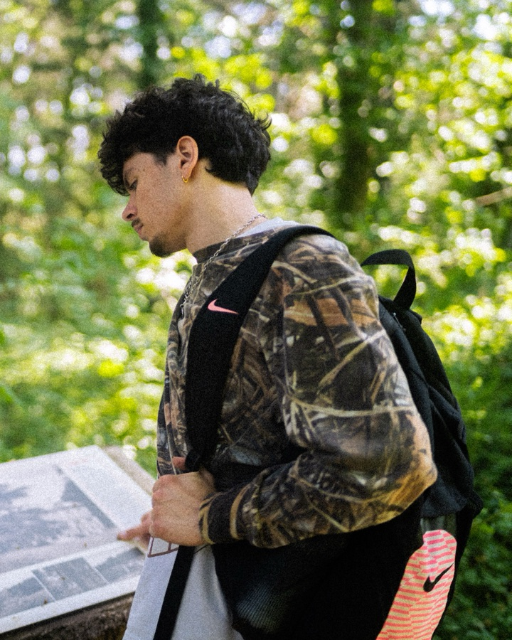

Joachim Subtil
Photographe de sport · Lyon
↓Basket
ASVEL Espoirs · ASVEL Féminin
05 photosRugby
Coupe d'Europe de rugby U18
05 photosBoxe
WBA – Léonardo Mosquea
06 photosVolley
ASUL Lyon Volley · Tournoi extérieur
05 photosHors terrain
Portraits · nature · scène
15 photos
À propos
Au bord du terrain, toujours.
Je m'appelle Joachim, je suis photographe de sport à Lyon. Depuis 2025, je couvre des matchs de basket, de rugby, de volley et de boxe en accréditation presse. Ce que je cherche : l'action décisive, l'émotion juste après, et tout ce qui se passe autour du terrain.
- +10accréditations presse
- 4fédérations nationales ont repris mes photos
- 82Kvues sur un retour en images
Sur le terrain
- ASVEL · basket
- ASUL Lyon Volley
- Coupe d'Europe de rugby U18
- Boxe WBA – Léonardo Mosquea
- Tournois de volley extérieurs
Ce que je propose
- Photos de match
- Portraits joueurs et staff
- Avant-match et coulisses
- Formats pour les réseaux sociaux
Un match à couvrir ?
joachim.subtil43@gmail.com